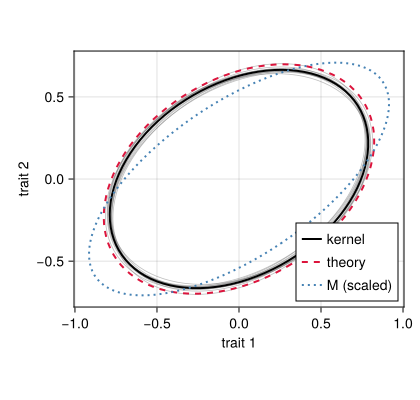
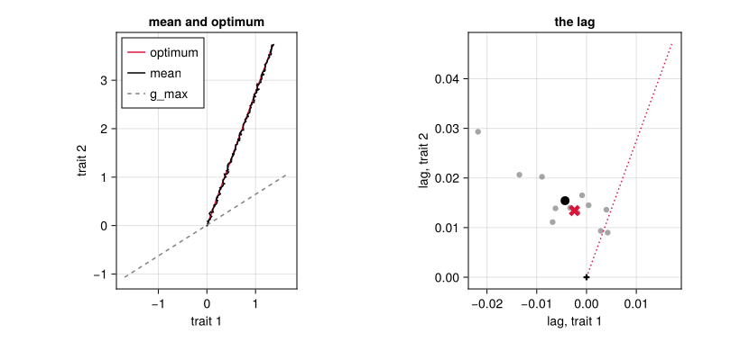
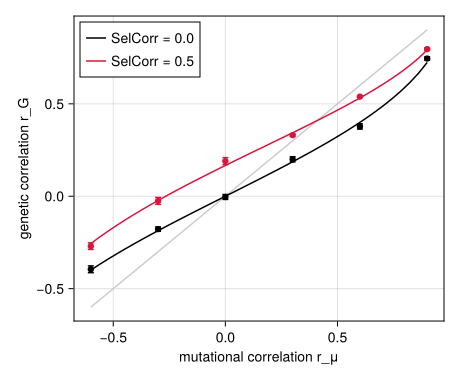
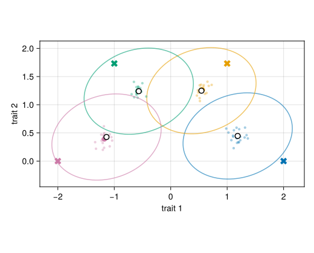

Several traits and pleiotropy
Simon Frost
- Overview
- Setup
- The model
- The G matrix at mutation–selection balance
- Correlated response and the line of least resistance
- Pleiotropy and the mutational correlation
- Local adaptation across demes
- A fluctuating optimum
- Kernel and SLiM
- Where next
Overview
QTSim follows one trait. QTLSim can follow n of them at once (NoTraits = n): every locus carries a vector of n allelic effects, so a mutation can change several traits together (pleiotropy), and selection acts on the traits jointly through a fitness function in n dimensions. This is the classical multivariate quantitative genetics of Lande (1979) and Lande (1980), in which the additive genetic covariance matrix G takes the place of the genetic variance, and of the simulation studies of G’s stability by Jones et al. (2003), Jones et al. (2004) and Jones et al. (2007).
The life cycle does not change. The model of several traits is a second family of lowerings of the same morphism of the life-cycle category: each step is sent to an operator on populations whose genotypes are vectors rather than numbers, and the steps that do not care what an allele is (inheritance, the change of width, the swap of generations) are sent to the same operators as for one trait. The design note Several traits records what generalised and what did not. This vignette shows the model, checks the G matrix it maintains against theory, and follows the correlated response to a moving optimum, the effect of the mutational correlation, local adaptation of several demes in two traits, and an optimum that fluctuates.
Setup
using QTLSim
using QTLSim: eigen, Symmetric, norm, dot # LinearAlgebra, through the package
import Catlab # loads the categorical layer
using Catlab: ⋅, ⊗
using CairoMakie, Printf, Random, Statistics
CairoMakie.activate!(type = "png")
L = lifecycle(); g = L.generation # QTSim's generation, Zygotes → Zygotesdevelop⋅select⋅reproduce⋅record⋅rescale⋅mutate⋅swap: Zygotes → ZygotesThe model
With NoTraits = 2, three things become matrices. The phenotype is z = g + e, with the genotype g the sum of the loci’s effect vectors and e ~ N(0, V_E I). A mutation adds a draw from N(0, M/(2L·rate)) to the effect vector of a random locus, so that the expected input per individual per generation is the mutational covariance M: here m V_E on the diagonal scaled by a shape [1 0.5; 0.5 0.6], given as MutCov. Fitness is QTSim’s Gaussian in two dimensions, W(z) = c·exp(−½ (z−θ)ᵀ Ω⁻¹ (z−θ)), with QTSim’s constant c and Ω = ω² S, here with a correlation of −0.3 between the two traits’ fitness (SelCorr). The two matrices do not share eigenvectors.
p = Params(PopSize = 1000, NoQTL = 20, Ploidy = 2, NoGenerations = 3000, PhenotypeVar = 1.0,
Heritability = 0.5, MutationScalar = 0.01, MutationRatePerGamete = 0.02,
RecombPoissonMean = 2.0, InitFitnessSD = 1.5, NoTraits = 2,
MutCov = 0.01 * 0.5 .* [1.0 0.5; 0.5 0.6], SelCorr = -0.3)
M, Ω = mutational_covariance(p), selection_covariance(p)
@printf("M = [%.4f %.4f; %.4f %.4f], Ω = [%.3f %.3f; %.3f %.3f], V_E = %.2f per trait\n",
M[1, 1], M[1, 2], M[2, 1], M[2, 2], Ω[1, 1], Ω[1, 2], Ω[2, 1], Ω[2, 2], envVar(p))M = [0.0050 0.0025; 0.0025 0.0030], Ω = [2.250 -0.675; -0.675 2.250], V_E = 0.50 per traitThe parameters a step can carry belong to the model. model_of(p) is the model of TraitModel(2), and its schema says what each step takes; for one trait select’s optimum θ is a number, for two it is a vector, and only the model of several traits has a fitness covariance Ω of its own:
step_schema(OneTraitModel())[:select], step_schema(model_of(p))[:select]((:ω, :θ, :MoveType, :MoveFitnessSD, :MoveFitnessSDGen, :MoveNoiseSD, :MoveAutocorr, :MoveAmplitude, :MovePeriod, :Drift, :Selection, :StandardisePhenotype), (:ω, :θ, :Ω, :MoveType, :MoveFitnessSD, :MoveFitnessSDGen, :MoveNoiseSD, :MoveAutocorr, :MoveAmplitude, :MovePeriod, :Drift, :Selection, :SelCorr, :MoveDirection, :MoveNoiseCov, :FluctDirection))The lowering to the kernel is chosen by the model: the same life cycle g is sent to the one-trait operators by default, and to the operators of two traits with model = model_of(p). Each refuses a population of the other model:
w = World(p); init_env!(w, Xoshiro(1))
try
lower(g, :kernel)(w, Xoshiro(2))
catch err
println(sprint(showerror, err))
end
lower(g, :kernel; model = model_of(p))(w, Xoshiro(2)); w.genArgumentError: the one-trait model's image of a step got a population of 2 traits; lower with model = model_of(p), TraitModel(2)
1simulate and run_composed choose the model from the Params. The records keep QTSim’s columns, which describe trait 1, and add the mean vector, G and P, the lag θ − z̄ and the selection differential, one vector or matrix per recorded generation:
o = simulate(Params(p; NoGenerations = 200); seed = 1)
o.trait_mean[end], o.gmatrix[end]([-0.07612673006000431, 0.09251806520933846], [0.3884374534076863 0.1368816965638535; 0.1368816965638535 0.24572006469229007])The G matrix at mutation–selection balance
Each locus’s share of G loses (G/2L)(A + G)⁻¹(G/2L) to selection for good, with A = Ω + V_E I, while the rest of selection’s reduction is linkage disequilibrium that recombination breaks up. Without drift the equilibrium of this multilocus Gaussian model is the solution of G (A + G)⁻¹ G = 2L·M (gaussian_G_loci), which for one trait is QTLSim’s gaussian_vg_loci (Lande 1980, 1975). Drift among N adults lowers it (gaussian_G_loci(p; drift = true)), and the moments lowering (run_moments) iterates the same recursion generation by generation. Twelve replicate populations, from genotypes of zero, averaged over generations 1000–2999:
R = 12
runs = Vector{Any}(undef, R)
Threads.@threads :greedy for r in 1:R
runs[r] = simulate(p; seed = 100 + r)
end
window(o, lo, hi) = findall(t -> lo <= t <= hi, o.gen)
Gk = [mean(o.gmatrix[window(o, 1000, 2999)]) for o in runs]
Gbar = mean(Gk)
Gth, Gd = gaussian_G_loci(p), gaussian_G_loci(p; drift = true)
Gmo = run_moments(p; erosion = true, loci = :multilocus).gmatrix[end]
corr(G) = G[1, 2] / sqrt(G[1, 1] * G[2, 2])
angle(v) = mod(atand(v[2], v[1]), 180)angle (generic function with 1 method)println("| | G₁₁ | G₁₂ | G₂₂ | genetic correlation | g_max (degrees from trait 1) |\n|:--|--:|--:|--:|--:|--:|")
se(f) = std(f.(Gk)) / sqrt(R)
@printf("| kernel, 12 runs (± SE) | %.4f ± %.4f | %.4f ± %.4f | %.4f ± %.4f | %.3f ± %.3f | %.1f |\n",
Gbar[1, 1], se(G -> G[1, 1]), Gbar[1, 2], se(G -> G[1, 2]), Gbar[2, 2], se(G -> G[2, 2]),
corr(Gbar), se(corr), angle(gmax(Gbar)))
for (nm, G) in (("multilocus Gaussian, with drift (`gaussian_G_loci(p; drift = true)`)", Gd),
("moments lowering, with drift (`run_moments(p; erosion = true, loci = :multilocus)`)", Gmo),
("multilocus Gaussian, no drift (`gaussian_G_loci(p)`)", Gth))
@printf("| %s | %.4f | %.4f | %.4f | %.3f | %.1f |\n", nm, G[1, 1], G[1, 2], G[2, 2], corr(G), angle(gmax(G)))
end
@printf("| mutation, `M` | %.4f | %.4f | %.4f | %.3f | %.1f |\n", M[1, 1], M[1, 2], M[2, 2], corr(M), angle(gmax(M)))| G₁₁ | G₁₂ | G₂₂ | genetic correlation | g_max (degrees from trait 1) | |
|---|---|---|---|---|---|
| kernel, 12 runs (± SE) | 0.6211 ± 0.0064 | 0.1716 ± 0.0039 | 0.4417 ± 0.0063 | 0.328 ± 0.008 | 31.2 |
multilocus Gaussian, with drift (gaussian_G_loci(p; drift = true)) | 0.6795 | 0.1910 | 0.4876 | 0.332 | 31.7 |
moments lowering, with drift (run_moments(p; erosion = true, loci = :multilocus)) | 0.6795 | 0.1910 | 0.4876 | 0.332 | 31.7 |
multilocus Gaussian, no drift (gaussian_G_loci(p)) | 0.7775 | 0.2007 | 0.5674 | 0.302 | 31.2 |
mutation, M | 0.0050 | 0.0025 | 0.0030 | 0.645 | 34.1 |
The kernel’s variances are 0.91 and 0.91 times the prediction with drift, and its genetic correlation 0.328 against 0.332: the Gaussian approximation somewhat overestimates the variances and gets their correlation right (validate/moments_loci.jl compares it with the kernel systematically). The leading axis of G, g_max, lies at 31° from trait 1 (32° predicted), against 34° for M: Lande’s equilibrium mixes the mutational and the selective covariances (for weak mutation it is their matrix geometric mean), so G is not a scaled copy of M.
ellipse(G; n = 100) = (F = eigen(Symmetric(G)); [F.vectors * (sqrt.(F.values) .* [cos(t), sin(t)]) for t in range(0, 2π, n)])
pts(G) = (e = ellipse(G); (first.(e), last.(e)))
fig = Figure(size = (420, 400))
ax = Axis(fig[1, 1], aspect = DataAspect(), xlabel = "trait 1", ylabel = "trait 2")
for G in Gk
lines!(ax, pts(G)..., color = (:grey, 0.5), linewidth = 0.8)
end
lines!(ax, pts(Gbar)..., color = :black, linewidth = 2, label = "kernel")
lines!(ax, pts(Gd)..., color = :crimson, linestyle = :dash, linewidth = 2, label = "theory")
Ms = M .* sqrt(abs(QTLSim.det(Gbar)) / abs(QTLSim.det(M)))
lines!(ax, pts(Ms)..., color = :steelblue, linestyle = :dot, linewidth = 2, label = "M (scaled)")
axislegend(ax, position = :rb)
fig
Figure 1: The G matrix at equilibrium, as ellipses of points x with xᵀG⁻¹x = 1. Thin grey: each of the 12 kernel runs; black: their mean; red dashed: the multilocus Gaussian prediction with drift; blue dotted: the mutational covariance M, scaled to the same area.
Correlated response and the line of least resistance
Selection on one trait moves the others through their genetic covariances. Lande’s response is Δz̄ = G β with the selection gradient β = (A + G)⁻¹(θ − z̄) (Lande 1979; Lande and Arnold 1983): in G’s eigenbasis each component of β is multiplied by its eigenvalue, so the response turns from the gradient toward g_max, the genetic line of least resistance (Schluter 1996). For an optimum moving at a constant rate k (a vector) the population settles at the lag λ = (A + G) G⁻¹ k (steady_lag_vector): the mean keeps up exactly along k, but the lag is longest, and points, where there is least genetic variance. Here the optimum moves by 0.002 per generation from generation 3000, at 70° from trait 1:
pm = Params(p; NoGenerations = 5000, MoveFitnessSDGen = 3000, MoveType = :continuous,
MoveFitnessSD = 0.002, MoveDirection = [cosd(70), sind(70)])
mruns = Vector{Any}(undef, R)
Threads.@threads :greedy for r in 1:R
mruns[r] = simulate(pm; seed = 200 + r)
end
lagk = mean(mean(o.trait_lag[window(o, 4000, 4999)]) for o in mruns)
Gm = mean(mean(o.gmatrix[window(o, 4000, 4999)]) for o in mruns)
k = 0.002 .* move_direction(pm)
λth = steady_lag_vector(k; G = Gm, A = selection_variance_matrix(pm))
mo = run_moments(pm; erosion = true)
λmo = mean(mo.trait_lag[4001:5000])
d = response_deflection(λth; G = Gm, A = selection_variance_matrix(pm))(β = [-0.00010392035566370727, 0.004176965489138944], response = [0.0006840402866513374, 0.0018793852415718167], angle_response_gradient = 21.425190066496775, angle_response_gmax = 37.56582972885954, angle_gradient_gmax = 58.991019795356316)println("| | lag, trait 1 | lag, trait 2 | direction (degrees) |\n|:--|--:|--:|--:|")
for (nm, v) in (("kernel, generations 4000–4999", lagk), ("`steady_lag_vector`, kernel's G", λth),
("moments lowering", λmo), ("the optimum's motion `k` (×10)", 10 .* k))
@printf("| %s | %.4f | %.4f | %.1f |\n", nm, v[1], v[2], mod(atand(v[2], v[1]), 360))
end| lag, trait 1 | lag, trait 2 | direction (degrees) | |
|---|---|---|---|
| kernel, generations 4000–4999 | -0.0043 | 0.0154 | 105.6 |
steady_lag_vector, kernel’s G | -0.0024 | 0.0134 | 100.2 |
| moments lowering | -0.0024 | 0.0135 | 99.9 |
the optimum’s motion k (×10) | 0.0068 | 0.0188 | 70.0 |
The optimum moves at 70°, g_max lies at 32°, and the lag points at 106° in the kernel (100° predicted): it is deflected away from g_max, toward the direction of least genetic variance, while the gradient it creates, β, is turned by G back onto the optimum’s path. At the steady lag the response Gβ lies at 37.6° from g_max and the gradient β at 59.0°: selection pulls off the line of least resistance, and G turns the response back toward it.
fig = Figure(size = (820, 380))
ax1 = Axis(fig[1, 1], aspect = DataAspect(), xlabel = "trait 1", ylabel = "trait 2", title = "mean and optimum")
zt = [mean(o.trait_mean[i] for o in mruns) for i in 3001:10:5000]
θt = [mean(o.trait_mean[i] + o.trait_lag[i] for o in mruns) for i in 3001:10:5000]
lines!(ax1, first.(θt), last.(θt), color = :crimson, label = "optimum")
lines!(ax1, first.(zt), last.(zt), color = :black, label = "mean")
gm = gmax(Gm); z0 = zt[1]
lines!(ax1, [z0[1] - 2gm[1], z0[1] + 2gm[1]], [z0[2] - 2gm[2], z0[2] + 2gm[2]], color = :grey, linestyle = :dash, label = "g_max")
axislegend(ax1, position = :lt)
ax2 = Axis(fig[1, 2], aspect = DataAspect(), xlabel = "lag, trait 1", ylabel = "lag, trait 2", title = "the lag")
lr = [mean(o.trait_lag[window(o, 4000, 4999)]) for o in mruns]
scatter!(ax2, first.(lr), last.(lr), color = (:grey, 0.7))
scatter!(ax2, [lagk[1]], [lagk[2]], color = :black, markersize = 14)
scatter!(ax2, [λth[1]], [λth[2]], color = :crimson, marker = :xcross, markersize = 18)
lines!(ax2, [0, 0.05cosd(70)], [0, 0.05sind(70)], color = :crimson, linestyle = :dot)
scatter!(ax2, [0.0], [0.0], color = :black, marker = :cross)
fig
Figure 2: Tracking an optimum that moves at 70° from trait 1. Left: the mean phenotype (black, mean of 12 runs) and the optimum (red) in the plane of the two traits from generation 3000; the dashed line is the g_max axis through the mean at 3000. Right: the lag θ − z̄, each run’s mean over generations 4000–4999 (grey), their mean (black) and the steady lag vector (red cross).
Pleiotropy and the mutational correlation
How much of the genetic correlation between two traits comes from the mutations, and how much from selection? Lande’s equilibrium answers it: G is shaped by both M and A, and with weak mutation it is their geometric mean, so a mutational correlation r_μ is carried into G but pulled toward the correlation that selection favours (Lande 1980; Jones et al. 2003). With M = m V_E [1 r_μ; r_μ 1] and selection uncorrelated (SelCorr = 0) or correlated (SelCorr = 0.5), four runs each:
rμs = [-0.6, -0.3, 0.0, 0.3, 0.6, 0.9]
rωs = [0.0, 0.5]
pc = Params(p; MutCov = zeros(0, 0), PopSize = 500, NoGenerations = 2500)
cases = [(rμ, rω) for rω in rωs for rμ in rμs]
pcase(rμ, rω) = Params(pc; MutCorr = rμ, SelCorr = rω)
cjobs = [(i, r) for i in eachindex(cases) for r in 1:4]
cres = Vector{Float64}(undef, length(cjobs))
Threads.@threads :greedy for j in eachindex(cjobs)
i, r = cjobs[j]
o = simulate(pcase(cases[i]...); seed = 300 + 10i + r)
cres[j] = corr(mean(o.gmatrix[window(o, 1000, 2499)]))
end
rG = [mean(cres[j] for j in eachindex(cjobs) if cjobs[j][1] == i) for i in eachindex(cases)]
rGse = [std([cres[j] for j in eachindex(cjobs) if cjobs[j][1] == i]) / 2 for i in eachindex(cases)]
rGth(rμ, rω) = corr(gaussian_G_loci(pcase(rμ, rω); drift = true))rGth (generic function with 1 method)fig = Figure(size = (460, 380))
ax = Axis(fig[1, 1], xlabel = "mutational correlation r_μ", ylabel = "genetic correlation r_G")
xs = range(-0.6, 0.9, 40)
lines!(ax, [-0.6, 0.9], [-0.6, 0.9], color = :grey80)
for (rω, col) in zip(rωs, (:black, :crimson))
lines!(ax, xs, [rGth(x, rω) for x in xs], color = col, label = "SelCorr = $rω")
ii = findall(c -> c[2] == rω, cases)
errorbars!(ax, rμs, rG[ii], rGse[ii], color = col, whiskerwidth = 6)
scatter!(ax, rμs, rG[ii], color = col)
end
axislegend(ax, position = :lt)
fig
Figure 3: The genetic correlation at equilibrium against the mutational correlation, with uncorrelated selection (black) and with a fitness correlation of 0.5 (red). Points: kernel, mean of 4 runs with ±1 SE; lines: the multilocus Gaussian equilibrium with drift; grey: rG = rμ.
The kernel follows the prediction across the range: the largest difference in rG is 0.023. A positive fitness correlation (individuals far off along both traits together are selected less against, Ω elongated along (1, 1)) maintains more variance along (1, 1), so with uncorrelated mutations rG is 0.19 (0.17 predicted), not zero. The genetic correlation is a compromise between the mutational and the selective correlations, not a copy of either.
Local adaptation across demes
Steps carry parameters of their model, so a deme can be given an optimum vector of its own: withparams(g, p; θ = [θ₁, θ₂]) is the generation of a deme selected toward (θ₁, θ₂). Four demes of 100 diploids with optima at distance 2 from the origin, at 0°, 60°, 120° and 180°, exchange migrants at forward rate 0.01 (island model). The moments lowering of several demes (between = true) carries, for each deme, the haplotype moments of the multilocus model as matrices (by default with the rare-alleles closure for locally favoured alleles, loci = :rare_local, which here, with many mutations, is close to the Gaussian model) and, with drift, the cross-moments between demes, so it predicts the deme means, the within-deme G and the covariance matrix of the deme means. Twenty kernel runs:
pd = Params(Ploidy = 2, NoQTL = 20, PhenotypeVar = 2.0, Heritability = 0.5, MutationScalar = 1e-3,
MutationRatePerGamete = 0.02, PopSize = 100, NoGenerations = 3000, Sample = 10, InitFitnessSD = 5.0,
NoTraits = 2, MutCorr = 0.3, SelCorr = 0.2)
φs = [0.0, 60.0, 120.0, 180.0]
θs = [2.0 .* [cosd(φ), sind(φ)] for φ in φs]
dcycle = foldl(⊗, [withparams(g, pd; θ = θ) for θ in θs]) ⋅ L.migrate(4)
census = collect(1500:10:2990)
function deme_run(seed)
s = pd ⊗ demes(4)
idx = IdDict(w => i for (i, w) in enumerate(s.demes))
mg = [zeros(2) for _ in 1:4, _ in census]
gw = [zeros(2, 2) for _ in 1:4, _ in census]
rec = operator(:record, function (w, rng)
j = searchsortedfirst(census, w.gen)
if j <= length(census) && census[j] == w.gen
gt = traitvalues(w; what = :genotype)
mg[idx[w], j] = vec(mean(gt; dims = 2)); gw[idx[w], j] = cov(gt; dims = 2)
end
w
end)
run_composed(s, Xoshiro(seed); cycle = dcycle, record = false, images = Dict(:record => rec), migration_rate = 0.01)
(means = [mean(mg[a, :]) for a in 1:4], W = mean(gw),
A = mean(cov(reduce(hcat, mg[:, j]); dims = 2) for j in eachindex(census)))
end
dres = Vector{Any}(undef, 20)
Threads.@threads :greedy for r in 1:20
dres[r] = deme_run(400 + r)
end
dm = run_moments(pd; cycle = dcycle, migration_rate = 0.01, between = true)
sel = findall(in(census), dm.metapop.gen)
Wm, Am = mean(dm.metapop.within[sel]), mean(dm.metapop.var_among[sel])
rows = findall(in(census), dm.gen)
mmeans = [mean(dm.trait_mean[r] for r in rows if dm.deme[r] == a) for a in 1:4]
kmeans = [mean(x.means[a] for x in dres) for a in 1:4]
qst(W, A) = (σ2 = 3 / 4 .* (A .- W ./ 100); [σ2[i, i] / (σ2[i, i] + 2W[i, i]) for i in 1:2])qst (generic function with 1 method)println("| deme | optimum | kernel mean | moments mean | direction, kernel | direction, moments |\n|--:|--:|--:|--:|--:|--:|")
for a in 1:4
@printf("| %d | (%.2f, %.2f) | (%.3f, %.3f) | (%.3f, %.3f) | %.1f° | %.1f° |\n", a, θs[a]..., kmeans[a]..., mmeans[a]...,
atand(kmeans[a][2], kmeans[a][1]), atand(mmeans[a][2], mmeans[a][1]))
end
Wk, Ak = mean(x.W for x in dres), mean(x.A for x in dres)
println("\n| | G₁₁ | G₁₂ | G₂₂ | among, 11 | among, 12 | among, 22 | Q_ST trait 1 | Q_ST trait 2 |\n|:--|--:|--:|--:|--:|--:|--:|--:|--:|")
@printf("| kernel, 20 runs | %.3f | %.3f | %.3f | %.3f | %.3f | %.3f | %.3f | %.3f |\n", Wk[1, 1], Wk[1, 2], Wk[2, 2],
Ak[1, 1], Ak[1, 2], Ak[2, 2], qst(Wk, Ak)...)
@printf("| moments, `between = true` | %.3f | %.3f | %.3f | %.3f | %.3f | %.3f | %.3f | %.3f |\n", Wm[1, 1], Wm[1, 2], Wm[2, 2],
Am[1, 1], Am[1, 2], Am[2, 2], qst(Wm, Am)...)| deme | optimum | kernel mean | moments mean | direction, kernel | direction, moments |
|---|---|---|---|---|---|
| 1 | (2.00, 0.00) | (1.182, 0.440) | (1.186, 0.446) | 20.4° | 20.6° |
| 2 | (1.00, 1.73) | (0.560, 1.263) | (0.544, 1.249) | 66.1° | 66.5° |
| 3 | (-1.00, 1.73) | (-0.580, 1.245) | (-0.567, 1.240) | 115.0° | 114.6° |
| 4 | (-2.00, 0.00) | (-1.176, 0.391) | (-1.138, 0.427) | 161.6° | 159.4° |
| G₁₁ | G₁₂ | G₂₂ | among, 11 | among, 12 | among, 22 | Q_ST trait 1 | Q_ST trait 2 | |
|---|---|---|---|---|---|---|---|---|
| kernel, 20 runs | 0.859 | 0.155 | 0.591 | 1.245 | 0.034 | 0.323 | 0.351 | 0.167 |
moments, between = true | 0.938 | 0.130 | 0.585 | 1.195 | 0.013 | 0.286 | 0.322 | 0.152 |
The demes do not reach their optima: migration pulls each toward the others, so the deme whose optimum is at 0° has its mean at 20° and the one at 180° at 162°. Trait 1, along which the optima are spread further, is more differentiated than trait 2: Q_ST is 0.351 and 0.167 in the kernel (0.322 and 0.152 predicted), against 0.064 for a neutral trait in the same metapopulation. The largest difference between the kernel’s and the moments’ deme means is 0.038, for optima at distance 2.
validate/trait_moments_demes.jl makes this comparison with 200 runs and 50 loci, with tolerances fixed before the runs, and passes:
logf = joinpath(@__DIR__, "..", "..", "validate", "trait_moments_demes.log")
if isfile(logf)
inT1 = false
for l in readlines(logf)
occursin("T1 local", l) && (inT1 = true)
occursin("deme means", l) && (inT1 = false)
(inT1 || startswith(l, "PASS") || startswith(l, "FAIL")) && println(" ", l)
end
endT1 local optima along four directions; 200 replicates
statistic moments kernel SE 95% CI dev/scale verdict
G_W11 0.89168 0.83124 0.0047 [ 0.8221, 0.8404] -6.8% ok
G_W12 0.1572 0.16251 0.0029 [ 0.1567, 0.1683] +0.7% ok
G_W22 0.63461 0.62651 0.0038 [ 0.6191, 0.634] -1.3% ok
A11 1.1413 1.1977 0.008 [ 1.182, 1.213] +4.9% ok
A12 0.031216 0.039574 0.0035 [ 0.03268, 0.04647] +1.4% ok
A22 0.30726 0.33382 0.0028 [ 0.3283, 0.3394] +8.6% ok
Q_ST trait 1 0.3226 0.34921 0.00076 [ 0.3477, 0.3507] +8.2% ok
Q_ST trait 2 0.15097 0.16392 0.00081 [ 0.1623, 0.1655] +8.6% ok
PASS: every pre-specified criterion holdsfig = Figure(size = (520, 420))
ax = Axis(fig[1, 1], aspect = DataAspect(), xlabel = "trait 1", ylabel = "trait 2")
cols = Makie.wong_colors()
for a in 1:4
scatter!(ax, [θs[a][1]], [θs[a][2]], marker = :xcross, markersize = 16, color = cols[a])
scatter!(ax, [x.means[a][1] for x in dres], [x.means[a][2] for x in dres], color = (cols[a], 0.35), markersize = 6)
scatter!(ax, [kmeans[a][1]], [kmeans[a][2]], color = cols[a], markersize = 12)
scatter!(ax, [mmeans[a][1]], [mmeans[a][2]], color = :white, strokecolor = :black, strokewidth = 1.5, markersize = 12)
e = ellipse(Wm)
lines!(ax, mmeans[a][1] .+ first.(e), mmeans[a][2] .+ last.(e), color = (cols[a], 0.6))
end
fig
Figure 4: Four demes adapting to optima at 0°, 60°, 120° and 180° (crosses), linked by migration. Points: the kernel’s deme means (20 runs, each run’s mean over generations 1500–2990, light; their mean, dark); open circles: the moments lowering; ellipses: the within-deme G of the moments (×1), centred on each deme’s mean.
A fluctuating optimum
The optimum vector can also fluctuate around its trend: as a cycle along a direction f (MoveType = :periodic, FluctDirection), or as red noise, a vector AR(1) process with a stationary covariance Σ (MoveType = :red_noise, MoveNoiseCov, by default MoveNoiseSD² f fᵀ) and autocorrelation ρ. The lag then fluctuates too. With the mean following z̄' = z̄ + B (θ − z̄), B = G (A + G)⁻¹, the lag and the noise form a linear system whose stationary covariance solves a discrete Lyapunov equation; red_noise_lag_cov(Σ, ρ; G, A) is its lag block, the matrix version of the one-trait red_noise_lag_var (vignette 06), and periodic_lag_cov that of periodic_response. Twelve runs with Σ = [0.2 0.05; 0.05 0.1] and ρ = 0.7, the lag’s covariance over generations 1500–2499:
pf = Params(p; PopSize = 500, NoQTL = 10, NoGenerations = 2500, MoveFitnessSDGen = 1000, MoveFitnessSD = 0.0,
MoveType = :red_noise, MoveNoiseCov = [0.2 0.05; 0.05 0.1], MoveAutocorr = 0.7)
fruns = Vector{Any}(undef, R)
Threads.@threads :greedy for r in 1:R
fruns[r] = simulate(pf; seed = 500 + r)
end
Λk = mean(mean(l * l' for l in o.trait_lag[window(o, 1500, 2499)]) for o in fruns)
Gf = mean(mean(o.gmatrix[window(o, 1500, 2499)]) for o in fruns)
Λth = red_noise_lag_cov(pf.MoveNoiseCov, 0.7; G = Gf, A = selection_variance_matrix(pf))
@printf("E[λλᵀ]: kernel [%.4f %.4f; %.4f %.4f], red_noise_lag_cov with the kernel's G [%.4f %.4f; %.4f %.4f]\n",
Λk[1, 1], Λk[1, 2], Λk[2, 1], Λk[2, 2], Λth[1, 1], Λth[1, 2], Λth[2, 1], Λth[2, 2])
@printf("expected lag load tr((Ω + P)⁻¹ E[λλᵀ])/2 = %.4f\n", trait_lag_load(Params(pf); G = Gf))E[λλᵀ]: kernel [0.1666 0.0325; 0.0325 0.0907], red_noise_lag_cov with the kernel's G [0.1587 0.0330; 0.0330 0.0838]
expected lag load tr((Ω + P)⁻¹ E[λλᵀ])/2 = 0.0422The theory has the lag’s covariance to within 8% on the diagonal and 1% off it. The excess on the diagonal, 0.0079 and 0.0069, is about the same for both traits: it is what the deterministic theory leaves out, the drift of the mean and the sampling error of the recorded mean phenotype, which add to the lag in every direction.
Kernel and SLiM
The lowering to SLiM’s Eidos has its own table of images for several traits: an individual carries L·n values per chromosome, fitness is computed with matrixMult, and mutations are drawn with rmvnorm. A step’s own vector optimum, fitness covariance, move direction and mutational covariance become literals in its code, so demes of a SLiM model can differ in their trait parameters through steps. The generated model is compared with the kernel, 40 runs each, by two-sample KS tests, in validate/slim/compare_traits.jl (stabilising selection and a moving optimum) and validate/slim/compare_traits_fluctuating.jl (red noise and a cycle, which also compares the kernel’s lag covariance with the theory above). From their logs:
for f in ("valid_traits.log", "valid_traits_fluctuating.log")
path = joinpath(@__DIR__, "..", "..", "validate", "slim", f)
isfile(path) || continue
println("`$f`:\n")
for l in readlines(path)
(startswith(l, "smallest") || startswith(l, "theory:")) && println("- ", strip(l))
end
println()
endvalid_traits.log:
- smallest p = 0.263: no discrepancy
valid_traits_fluctuating.log:
- smallest KS p = 0.263: no discrepancy between kernel and SLiM
- theory: every pre-specified criterion holds
Where next
- The equilibrium
Gassumes Gaussian allelic effects at every locus; with rare mutations of large effect (the house-of-cards regime) it fails for one trait (Mutation–selection balance), and for several the shape ofG, not only its size, should change. Gitself evolves under a moving optimum (Jones et al. 2004), and the mutation matrix can evolve (Jones et al. 2007); the records here keepGevery generation, so its orientation and stability can be followed directly.- Demography:
Demography = :beverton_holtworks with several traits, so rescue in two dimensions, where the lag’s direction matters for the load (trait_lag_load), is a few lines away (Demography and evolutionary rescue). - Per-deme trait parameters in a SLiM model go through steps,
withparams(g, p; θ = …);slim_scriptwith oneParamsper deme still requires the demes’ trait fields to agree.
Jones, Adam G., Stevan J. Arnold, and Reinhard Bürger. 2003. “Stability of the G-Matrix in a Population Experiencing Pleiotropic Mutation, Stabilizing Selection, and Genetic Drift.” Evolution 57 (8): 1747–60. https://doi.org/10.1111/j.0014-3820.2003.tb00583.x.
Jones, Adam G., Stevan J. Arnold, and Reinhard Bürger. 2004. “Evolution and Stability of the G-Matrix on a Landscape with a Moving Optimum.” Evolution 58 (8): 1639–54. https://doi.org/10.1111/j.0014-3820.2004.tb00450.x.
Jones, Adam G., Stevan J. Arnold, and Reinhard Bürger. 2007. “The Mutation Matrix and the Evolution of Evolvability.” Evolution 61 (4): 727–45. https://doi.org/10.1111/j.1558-5646.2007.00071.x.
Lande, Russell. 1975. “The Maintenance of Genetic Variability by Mutation in a Polygenic Character with Linked Loci.” Genetical Research 26 (3): 221–35. https://doi.org/10.1017/S0016672300016037.
Lande, Russell. 1979. “Quantitative Genetic Analysis of Multivariate Evolution, Applied to Brain:body Size Allometry.” Evolution 33 (1): 402–16. https://doi.org/10.1111/j.1558-5646.1979.tb04694.x.
Lande, Russell. 1980. “The Genetic Covariance Between Characters Maintained by Pleiotropic Mutations.” Genetics 94 (1): 203–15. https://doi.org/10.1093/genetics/94.1.203.
Lande, Russell, and Stevan J. Arnold. 1983. “The Measurement of Selection on Correlated Characters.” Evolution 37 (6): 1210–26. https://doi.org/10.1111/j.1558-5646.1983.tb00236.x.
Schluter, Dolph. 1996. “Adaptive Radiation Along Genetic Lines of Least Resistance.” Evolution 50 (5): 1766–74. https://doi.org/10.1111/j.1558-5646.1996.tb03563.x.